Supervised learning using discriminative models in pmtk3
This page was auto-generated by publishing http://pmtk3.googlecode.com/svn/trunk/docs/tutorial/tutDiscrimClassif.m.
Contents
- Models
- Creating a model
- Fitting a linear regression model by maximum likelihood
- Bayesian parameter inference
- Frequentist parameter inference
- Using a model for prediction
- Prediction with linear regression
- Prediction with logistic regression
- Visualizing the decision boundaires
- Preprocessing, basis function expansion and kernels
- Overfitting, regularization and MAP estimation
- Cross validation for ridge regression
- Bayesian evidence procedure for ridge regression
- Empirical Bayes for ridge regression
- Variational Bayes for ridge regression
Models
The following is a list of pmtk models that are designed for supervised learning (in alphabetical order). We have classified the models based on whether they can be used for classification 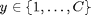, regression 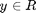, or both; whether they are generative models of the form 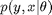 or discriminative models of the form 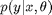; and whether they are parametric (so 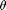 has fixed size) or non-parametric (so grows as the training set gets larger). We assume y is a low-dimensional scalar. Models for multivariate conditional density estimation (structured output classification/ regression) will be added later.
| Model | Description | Classif/regr | Gen/Discr | Param/non |
| discrimAnalysis | Discriminant analysis (linear, quadratic, regularized, shrunken) | Classif | Gen | Param |
| knn | k nearest neighbors | Classif | Gen | Nonparam |
| linreg | Linear regression | Regr | Discrim | Param |
| logreg | Logistic regression | Classif | Discrim | Param |
| mlpClassif | multi-layer perceptron (aka feedforward neural network) | Classif | Discrim | Param |
| mlpRegress | multi-layer perceptron (aka feedforward neural network) | Regr | Discrim | Param |
| naiveBayes | Naive Bayes classifier | Classif | Gen | Param |
| rvm | Relevance vector machine | Both | Discrim | Nonparam |
| svm | Support vector machine | Both | Discrim | Nonparam |
More models may be added in the future.
Creating a model
To create a model of type 'foo', use one of the following
model = fooCreate(...) % manually specify parameters model = fooFit(X, y, ...) % Compute ML or MAP estimate of params model = fooFitBayes(X, y, ...) % Compute posterior of params
where
- '...' refers to optional arguments (see below)
- X is an N*D design matrix containing the training data, where N is the number of training cases and D is the number of features.
- y is an N*1 response vector, which can be real-valued (regression), 0/1 or -1/+1 (binary classification), or 1:C (multi-class).
If X contains missing values, represented as NaNs, it is best to use a generative model (although not all models currently support this functionality). NaNs in y correspond to semi-supervised learning, which is not yet supported.
The resulting model is a Matlab structure; However, we will sometimes call it an 'object', since it behaves like one in many respects.
In the case of fooCreate and fooFit, the parameters are point estimates. In the case of fooFitBayes, the parameters are represented as distributions, which may be represented parameterically or as a bag of samples. The details will be explained below when we look at specific model classes.
Fitting a linear regression model by maximum likelihood
As an example, we can fit a linear regression model to the caterpillar data set using maximum likelihood estimation as follows (extracted from linregBayesCaterpillar.m):
clear all X = loadData('caterpillar'); % from http://www.ceremade.dauphine.fr/~xian/BCS/caterpillar y = log(X(:,11)); % log number of nests X = X(:,1:10); [model] = linregFit(X, y)
model =
lambda: 0
w: [11x1 double]
sigma2: 0.5852
preproc: [1x1 struct]
modelType: 'linreg'
likelihood: 'gaussian'
Let us check that this matches the usual equation for the MLE (adding a column of 1s to deal with the offset term)
X1 = [ones(size(X,1),1) X]; wOLS = X1\y; assert(approxeq(model.w, wOLS))
Bayesian parameter inference
If you fit by the model by MLE, you can examine the value of the estimated parameters by typing model.params, where params is the name of the parameter (here w or sigma2). But what if we want to know how much confidence we should have in these estimates? For this, we should use Bayesin inference. We can compute the posterior distribution of the parameters given the data and an uninformative prior as follows:
[modelB, logev, postSummary] = linregFitBayes(X, y, 'prior', 'uninf');
Here modelB is the model which contains the posterior of the parameters:
modelB
modelB =
preproc: [1x1 struct]
wN: [11x1 double]
VN: [11x11 double]
aN: 11
bN: 7.5649
modelType: 'linregBayes'
prior: 'uninf'
There is no longer a field called w or sigma2 since we are not using point estimation. Instead, modelB contains the parameters of the posterior, which has the following form
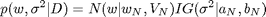
Since we used an uninformative prior, the posterior mean is the same as the MLE
assert(approxeq(wOLS, modelB.wN))
logev is the log evidence, or marginal likelihood, and is a measure of 'goodness of fit' of the overall model:
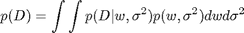
This can only be computed if we use a proper prior, not an uninformative prior. Hence in this case logev=[].
postSummary is a summary of the posterior. It contains the the posterior mean, standard deviation and 95% credible interval of each regression parameters. It also determines if each coefficient is significantly different from 0, based on whether its 95% CI excludes 0.
postSummary
postSummary =
what: [11x1 double]
stderr: [11x1 double]
credint: [11x2 double]
sig: [1 1 1 0 1 1 0 0 0 0 0]
We can print the posterior summary as a table using the command below. We put a little * next to the significant coefficients.
[modelB, logev, postSummary] = linregFitBayes(X, y, 'prior', 'uninf', ... 'displaySummary', true);
coeff mean stddev 95pc CI sig w0 10.998 3.06027 [ 4.652, 17.345] * w1 -0.004 0.00156 [ -0.008, -0.001] * w2 -0.054 0.02190 [ -0.099, -0.008] * w3 0.068 0.09947 [ -0.138, 0.274] w4 -1.294 0.56381 [ -2.463, -0.124] * w5 0.232 0.10438 [ 0.015, 0.448] * w6 -0.357 1.56646 [ -3.605, 2.892] w7 -0.237 1.00601 [ -2.324, 1.849] w8 0.181 0.23672 [ -0.310, 0.672] w9 -1.285 0.86485 [ -3.079, 0.508] w10 -0.433 0.73487 [ -1.957, 1.091]
We see that coefficients 0, 1, 2, 4, 5 are "significant" by this measure. (Other methods of testing significance, based on Bayes factors, can also be used, but are a bit more complicated to implement, and one cannot use uninformative priors when using Bayes factors.)
Note that pmtk currenlty has rather limited support for Bayesian model fitting, and not all Bayesian model fitting procedures currently implement this posterior summary feature.
Frequentist parameter inference
It turns out that in this particular example, the Bayesian analysis is identical to a classical frequentist analysis (because the posterior for linear regression under an uninformative Jeffreys prior is equivalent to the sampling distribution of the MLE). To see this, let us use the stats toolbox to fit the model and perform a frequentist analysis:
X1 = [ones(size(X,1),1), X]; [b, bint] = regress(y, X1); % b(j) is coefficient j, bint(j,:) = lower and upper 95% conf interval assert(approxeq(b, postSummary.what)) assert(approxeq(bint, postSummary.credint)) for i=1:length(b) fprintf('%8.3f, [%8.3f, %8.3f]\n', b(i), bint(i,1), bint(i,2)); end fprintf('\n');
10.998, [ 4.652, 17.345] -0.004, [ -0.008, -0.001] -0.054, [ -0.099, -0.008] 0.068, [ -0.138, 0.274] -1.294, [ -2.463, -0.124] 0.232, [ 0.015, 0.448] -0.357, [ -3.605, 2.892] -0.237, [ -2.324, 1.849] 0.181, [ -0.310, 0.672] -1.285, [ -3.079, 0.508] -0.433, [ -1.957, 1.091]
We see that the MLE is the same as the posterior mean, and the 95% frequentist confidence interval is the same as the 95% Bayesian credible interval.
In general, a Bayesian and frequentist analysis may not give the same results. In pmtk, all inference is Bayesian. However, pmtk supports some non-Bayesian estimation methods, such as cross validation, as we will see below.
Using a model for prediction
In machine learning, we usually care more about prediction than in trying to interpret the fitted parameters (especially since many models of interest are hard to interpret or even strictly unidentifiable).
Once the model has been created, you can use it to make predictions as follows
[yhat, py] = fooPredict(model, Xtest) % plugin approximation [yhat, py] = fooPredictBayes(model, Xtest) % posterior predictive
Here Xtest is an Ntest*D matrix of test inputs, and yhat is an Ntest*1 vector of predicted responses of the same type as ytrain. For regression this is the predicted mean, for classification this is the predicted mode (most probable class label). The meaning of py depends on the model, as follows:
- For regression, py is an Ntest*1 vector of predicted variances.
- For binary classification, py is an Ntest*1 vector of the probability of being in class 1.
- For multi-class, py is an Ntest*C matrix, where py(i,c) = p(y=c|Xtest(i,:),params)
The difference between predict and predictBayes is as follows. predict computes 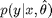, which "plugs in" a point estimate of the parameters, while predictBayes computes
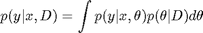
This is called the (posterior) predictive density. In practice, the Bayesian approach results in similar (often identical) values for yhat, but quite different values for py. In particular, the uncertainty is reflected more accurately in the Bayesian approach, as we illustrate below.
Prediction with linear regression
As an example, consider fitting a linear regression model to some 1d data using MLE and Bayesian methods (using linregPostPredLinearDemo.m ), and then plotting the predictions on a test set (which is just a grid of points in the interval [-7,7])
setSeed(1); [xtrain, ytrain, xtest] = polyDataMake('sampling', 'sparse', 'deg', 2); fitMethods = {@(x,y) linregFit(x,y), @(x,y) linregFitBayes(x,y)}; predictMethods = {@(x,y) linregPredict(x,y), @(x,y) linregPredictBayes(x,y)}; names = {'MLE', 'Bayes'}; for i=1:length(fitMethods) model = fitMethods{i}(xtrain, ytrain); [mu, v] = predictMethods{i}(model, xtest); figure; hold on plot(xtest, mu, 'k-', 'linewidth', 3, 'displayname', 'prediction'); plot(xtrain,ytrain,'ro','markersize', 14, 'linewidth', 3, ... 'displayname', 'training data'); NN = length(xtest); ndx = 1:5:NN; % plot subset of errorbars to reduce clutter sigma = sqrt(v); legend('location', 'northwest'); errorbar(xtest(ndx), mu(ndx), sigma(ndx)); title(names{i}); end


The predicted means (black lines) are the same, but in the plugin case, the predicted variance is constant, whereas in the Bayesian case, the predicted variance increases as we move further away from the training data, as it should, since our uncertainty increases as we extrapolate further.
Prediction with logistic regression
As another example of this, consider fitting a binary logistic regression model to some SAT scores, where the response is whether the student passed or failed the class. First we compute the MLE and use a plugin approximation for prediction, as is standard practice (from logregSATdemo.m )
close all; clear all stat = loadData('sat'); y = stat(:,1); X = stat(:,4); model = logregFit(X, y); [yhat, prob] = logregPredict(model, X); %ok figure; plot(X, y, 'ko', 'linewidth', 2, 'MarkerSize', 7, 'markerfacecolor', 'k'); hold on plot(X, prob, 'ro', 'linewidth', 2,'MarkerSize', 10)

We see that the probability of passing the class smoothly increases as the SAT score goes up. Now let us fit the model using Bayesian inference with an noninformative Gaussian prior. By default, the fitting procedure uses a Laplace approximation to the posterior. To approximate the predictive density, we can plugin in the posterior mean:

However, this gives essentially the same result as plugging in the MLE. To get a measure of confidence in this prediction, we can sample values of w from their posterior (which we have approximated by a Gaussian), use each such sample to make a prediction, and then compute empirical quantiles of this distribution to get a 95% credible interval. This is done using logregPredictBayes.m and gives the results shown below (from logregSATdemoBayes.m )
model = logregFitBayes(X, y); [yhat, prob, pCI] = logregPredictBayes(model, X); figure; plot(X, y, 'ko', 'linewidth', 2, 'MarkerSize', 7, 'markerfacecolor', 'k'); hold on plot(X, prob, 'ro', 'linewidth', 2,'MarkerSize', 10) for i=1:size(X,1) line([X(i,1) X(i,1)], [pCI(i,1) pCI(i,2)]); end

Not all models support Bayesian fitting or prediction (the list will hopefully grow over time, as people add new methods). However, all models provide some measure of confidence on their outputs.
Visualizing the decision boundaires
When comparing classification methods, it is useful to apply them to 2d datasets and to plot the regions of space that get mapped to each class; these are called decision regions, and the boundaries between them are called decision boundaries. We can do this using the plotDecisionBoundary(X, y, predFn) function, where predFn(X) takes a test matrix and computes the MAP estimate of the labels for each row. As an example of this, consider the famous XOR dataset. Let us try fitting a logistic regression model to it in the original feature space (from logregXorLinearDemo.m )
close all; clear all; [X, y] = createXORdata(); model = logregFit(X, y); plotDecisionBoundary(X, y, @(X)logregPredict(model, X)); yhat = logregPredict(model, X); errorRate = mean(yhat ~= y)
errorRate =
0.4875

We see that the method performs at chance level, because the data is not linearly separable. We give a simple fix to this problem below, when we discuss basis function expansion.
Preprocessing, basis function expansion and kernels
We are free to preprocess the data in any way we choose before fitting the model. In pmtk, you can create a preprocessor (pp) 'object', and then pass it to the fitting function; the pp will be applied to the training data before fitting the model, and will be applied again to the test data. The advantage of this approach is that the pp is stored inside the model, which reduces the chance of applying inconsistent transformations to training and test data.
One common form of preprocessing is basis function expansion. This replaces the original features with a larger set, thus providing an easy way to fit nonlinear models. A popular approach is to define the new feature vector as follows:
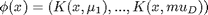
where the 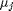 are 'prototypes' and K(x,\mu) is a 'kernel function', which in this context just means a function of two arguments. A common example is the Gaussian or RBF kernel
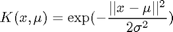
where 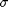 is the 'bandwidth'. (The quantity 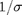 is known as the scale or precision.) Another common example is the polynomial kernel

where d is the degree. Often we take the prototypes to be the training vectors (rows of 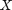), but we don't have to.
Below we show an example where we fit the XOR data using kernelized logistic regression, with various kernels and prototypes (from logregXorDemo.m ).
clear all; close all [X, y] = createXORdata(); rbfScale = 1; polydeg = 2; protoTypes = [1 1; 1 5; 5 1; 5 5]; protoTypesStnd = standardizeCols(protoTypes); kernels = {@(X1, X2)kernelRbfSigma(X1, protoTypesStnd, rbfScale) @(X1, X2)kernelRbfSigma(X1, X2, rbfScale) @(X1, X2)kernelPoly(X1, X2, polydeg)}; titles = {'rbf', 'rbf prototypes', 'poly'}; for i=1:numel(kernels) preproc = preprocessorCreate('kernelFn', kernels{i}, 'standardizeX', true, 'addOnes', true); model = logregFit(X, y, 'preproc', preproc); yhat = logregPredict(model, X); errorRate = mean(yhat ~= y); fprintf('Error rate using %s features: %2.f%%\n', titles{i}, 100*errorRate); predictFcn = @(Xtest)logregPredict(model, Xtest); plotDecisionBoundary(X, y, predictFcn); if i==2 hold on; plot(protoTypes(:, 1), protoTypes(:, 2), '*k', 'linewidth', 2, 'markersize', 10) end title(titles{i}); end
Error rate using rbf features: 0% Error rate using rbf prototypes features: 0% Error rate using poly features: 0%


In the first example, we use an RBF kernel with centers at 4 manually chosen points, shown with black stars. In the second and third examples, we use an RBF and polynomial kernel, centered at all the training data. This only leaves the kernel parameters ( and 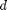) to be specified. Below we discuss how to choose the kernel parameters automatically.
Overfitting, regularization and MAP estimation
Using maximum likelihood to train a model often results in overfitting. This means that the model fits the training set well, but is overly complex and consequently performs poorly on test data. This is easiest to illustrate in the context of polynomial regression in 1d, as shown below (based on linregPolyVsRegDemo.m )
close all; clear all; setSeed(0); n=21; [xtrain, ytrain, xtest, ytestNoisefree, ytest, sigma2] =... polyDataMake('sampling','thibaux','n',n); deg = 14; ytrain = centerCols(ytrain); ytest = centerCols(ytest); pp = preprocessorCreate('poly', deg, 'rescaleX', true, 'standardizeX', false, 'addOnes', false); [pp, Xtrain] = preprocessorApplyToTrain(pp, xtrain); [Xtest] = preprocessorApplyToTest(pp, xtest); pp = preprocessorCreate( 'standardizeX', false, 'addOnes', false); % Fit model by MLE and plot model = linregFit(Xtrain, ytrain, 'preproc', pp); [ypredTest] = linregPredict(model, Xtest); figure; scatter(xtrain, ytrain,'b','filled'); hold on; plot(xtest, ypredTest, 'k', 'linewidth', 3);

We see that the fitted function is very 'wiggly', and fits the noise. This is common when we have very little data compared to the number of parameters (in this example, we have N=21 data points, and 15 parameters, since we fit a degree 14 polynomial).
Using Bayesian inference with an uninformative prior does not help. What we need is an informative prior, that encodes our preference for simpler models. A popular away to achieve this is to use a zero-mean spherical Gaussian prior of the form 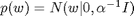, where 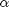 is the precision (strength) of the prior. This says that, a priori, we expect the regression weights to be small, which means we believe the function is simple/ smooth (not "too wiggly"). We can compute the posterior of w with this prior using a variety of different models/ likelihood functions. But a computationally simpler approach is to use MAP estimation (aka regularization), which just computes the posterior mode, which is given by
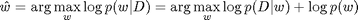
In the case of a Gaussian likelihood (linear regression) and Gaussian prior, we get
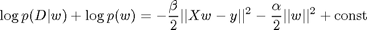
where 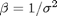 is the precision of the measurement noise. If we define 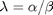 to be the amount of regularization, we can rewrite this as follows:
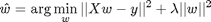
We see that this is a least squares problem with an L2 penalty on the weight vector (this is known as ridge regression). If  is too small, the model will overfit (since the function is too wiggly), but if it is too big, the model will underfit (since the function is too smooth). This is illustrated below, where we examine the mean squared error on the training and test sets as a function of . This illustrates the characteristic U-shape on the test set (based on linregPolyVsRegDemo.m ).
is too small, the model will overfit (since the function is too wiggly), but if it is too big, the model will underfit (since the function is too smooth). This is illustrated below, where we examine the mean squared error on the training and test sets as a function of . This illustrates the characteristic U-shape on the test set (based on linregPolyVsRegDemo.m ).
lambdas = logspace(-10,1.3,10); NL = length(lambdas); printNdx = round(linspace(2, NL-1, 3)); testMse = zeros(1,NL); trainMse = zeros(1,NL); for k=1:NL lambda = lambdas(k); [model] = linregFit(Xtrain, ytrain, 'lambda', lambda, 'preproc', pp); [ypredTest, s2] = linregPredict(model, Xtest); ypredTrain = linregPredict(model, Xtrain); testMse(k) = mean((ypredTest - ytest).^2); trainMse(k) = mean((ypredTrain - ytrain).^2); end hlam=figure; hold on ndx = log(lambdas); % 1:length(lambdas); plot(ndx, trainMse, 'bs:', 'linewidth', 2, 'markersize', 12); plot(ndx, testMse, 'rx-', 'linewidth', 2, 'markersize', 12); legend('train mse', 'test mse', 'location', 'northwest') xlabel('log lambda') title('mean squared error')

Below we print the fitted function for certain chosen lambdas
for k=printNdx lambda = lambdas(k); [model] = linregFit(Xtrain, ytrain, 'lambda', lambda, 'preproc', pp); [ypredTest, s2] = linregPredict(model, Xtest); ypredTrain = linregPredict(model, Xtrain); sig = sqrt(s2); figure; scatter(xtrain, ytrain,'b','filled'); hold on; plot(xtest, ypredTest, 'k', 'linewidth', 3); plot(xtest, ypredTest + sig, 'b:'); plot(xtest, ypredTest - sig, 'b:'); title(sprintf('ln lambda %5.3f', log(lambda))) end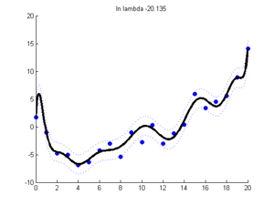 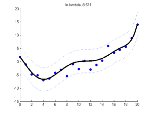 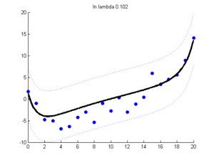
Cross validation for ridge regression
One simple way to choose regularization parameters is cross validation. Below we show how to estimate the expected loss for a ridge regression model as we vary the regularizer. We use the cvEstimate.m function, which can be used to estimate the frequentist risk of any estimation procedure (here each procedure corresponds to ridge regression with a different value of lambda) (based on linregPolyVsRegDemo.m )
for k=1:NL lambda = lambdas(k); fitFn = @(Xtr,ytr) linregFit(Xtr, ytr, 'lambda', lambda, 'preproc', pp); predFn = @(mod, Xte) linregPredict(mod, Xte); lossFn = @(yhat, yte) mean((yhat - yte).^2); N = size(Xtrain, 1); %nfolds = N; % LOOCV nfolds = 5; % since the data is sorted left to right, we must randomize the order [mu(k), se(k)] = cvEstimate(fitFn, predFn, lossFn, Xtrain, ytrain, nfolds, ... 'randomizeOrder', true); end
We can plot the results as shown below. We see that it exhibits a U-shape similar to the test error. The vertical line denotes the best value.
figure; hold on ndx = log(lambdas); % 1:length(lambdas); xlabel('log lambda') ylabel('mse') errorbar(ndx, mu, se, 'ko-','linewidth', 2, 'markersize', 12 ); title(sprintf('%d-fold cross validation, ntrain = %d', nfolds, N)) set(gca,'yscale','log') % draw vertical line at best value dof = 1./(eps+lambdas); idx_opt = argmin(mu); verticalLine(ndx(idx_opt), 'color','b', 'linewidth',2);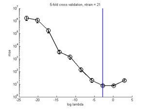
Bayesian evidence procedure for ridge regression
An alternative to cross validation is to to compute log evidence for each value of alpha, as shown below. (To simplify things, we use the known noise variance) When we plot the log evidence vs alpha, it exhibits the same (inverted) U shape as the test error. (based on linregPolyVsRegDemo.m )
beta = 1/sigma2; alphas = beta * lambdas; for k=1:NL lambda = lambdas(k); [model, logev(k)] = linregFitBayes(Xtrain, ytrain, 'preproc', pp, ... 'prior', 'gauss', 'alpha', alphas(k), 'beta', beta); ypredTest = linregPredictBayes(model, Xtest); ypredTrain = linregPredictBayes(model, Xtrain); testMseB(k) = mean((ypredTest - ytest).^2); trainMseB(k) = mean((ypredTrain - ytrain).^2); end % Sanity check - Bayes with fixed sigma should be same as ridge assert(approxeq(testMseB, testMse)) assert(approxeq(trainMseB, trainMse)) % Now we plot the log evidence vs alpha. figLogev = figure; plot(log(alphas), logev, 'ko-', 'linewidth', 2, 'markersize', 12); xlabel('log alpha') title('log evidence')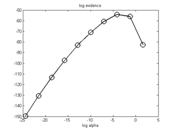
Empirical Bayes for ridge regression
The main benefit of the Bayesian approach is that we can use numerical optimization to pick the regularizer, rather than performing a discrete search over a finite grid of values. We just specify that the prior is of type 'eb', which stands for empirical Bayes. This is illustrated below. The vertical line corresponds to the best ML-II estimate. (This feature uses netlab.) (The code below is based on linregPolyVsRegDemo.m )
[modelEB, logevEB] = linregFitBayes(Xtrain, ytrain, 'preproc', pp, 'prior', 'eb'); alphaEB = modelEB.netlab.alpha; figure(figLogev); verticalLine(log(alphaEB), 'linewidth', 3, 'color', 'r');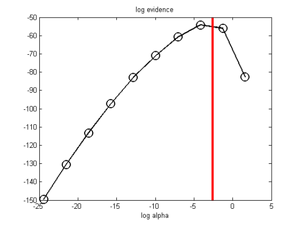
Variational Bayes for ridge regression
An alternative to EB is to use variational Bayes to infer the posterior over and 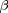. This is illustrated below. The posterior mean value for is shown by the blue line. We see this is very similar to the ML-II (EB) estimate, since we used a vague prior. (The code below is based on linregPolyVsRegDemo.m )
[modelVB, logevVB] = linregFitBayes(Xtrain, ytrain, 'preproc', pp, 'prior', 'vb'); alphaVB = modelVB.expectAlpha; figure(figLogev); verticalLine(log(alphaVB), 'linewidth', 3, 'color', 'b');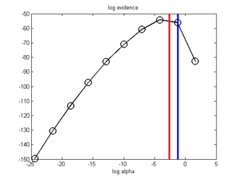